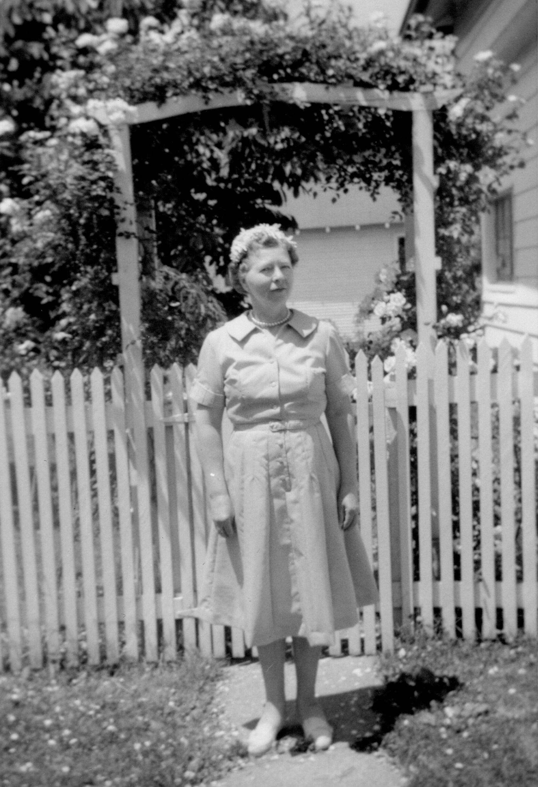

Mabel Charlotte Bennington (née Davis) 1906 - 1997
[ Home ] | [ Calendar ] | [ Surnames Index ] | [ Family History ]The youngest of 3 children of John Davis and Mary Miller, Mabel Davis, the fourth cousin twice-removed on the mother's side of Nigel Horne, was born in Jasonville, Clay, Indiana, USA on May 30, 19061,2,3 and was married twice - to Charles Dean (on Feb 10, 1920 in Vigo, Indiana, USA) James Bennington (on Sep 26, 1980 in Jasonville, Greene, Indiana)2. She had 3 children with Charles Dean: Melvin Charles, Leslie and Wesley.
Throughout her life, she lived in Lewis, Clay, Indiana on Apr 15, 19104 and on Apr 1, 19305 (the same place as her mother had been living on Apr 15, 1910); and in Coalmont, Howesville, Clay, Indiana on Apr 1, 19406.
She died on Jun 1, 1997 in Terre Haute, Indiana1,3 and was buried in Howesville, Clay, Indiana after Jun 1, 1997.
Parents
- John Monroe was born in 1870
- Mary Ann was born on Apr 15, 1873
Children
- Melvin Charles was born c. 1924
- Leslie was born on Aug 17, 1926
Citations
- Social Security Death Index - Findmypast
- United States Marriages - Findmypast
- United States Obituary Notices - Findmypast
- US Census 1910 - Findmypast (was age 3 and the daughter of the head of the household)
- US Census 1930 - Findmypast (was age 21 and the wife of the head of the household)
- US Census 1940 - Findmypast (was age 32 and the wife of the head of the household)
Media
Mabel Charlotte Davis

Social Security Death Index - USBMD/SSDI/309349776
United States Marriages - FS/MAR/40026665/2
United States Marriages - R_22714408390/2
United States Obituary Notices - US/TRIB/035375567
US Census 1910 - USC/1910/004971201/00445/008
Family Tree

Generated by Ged2Site. Last updated on Jul 20, 2025